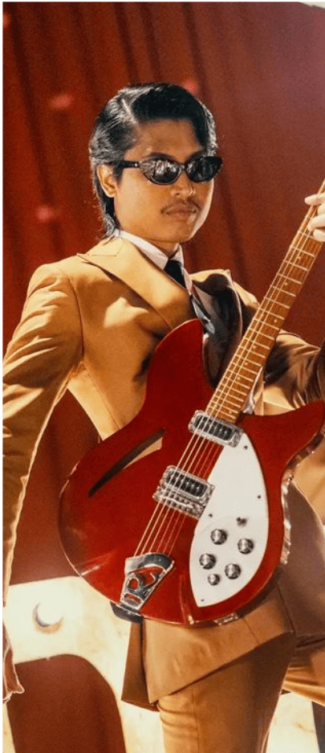

Formed in 2015, Kugiran Masdo is a Malaysian band that’s brought the magic of 60s pop yeh-yeh into the 21st century. With their catchy melodies, smooth guitar riffs, and a touch of nostalgia, they’ve redefined the retro vibe for today’s crowd. The band, originally known as The Lipstik, took their name from a character in the iconic Malay film Do Re Mi — and just like that character, they’ve quickly become a beloved figure in the Malaysian music scene.